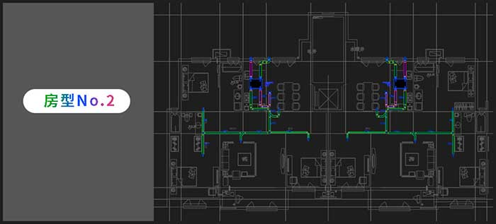
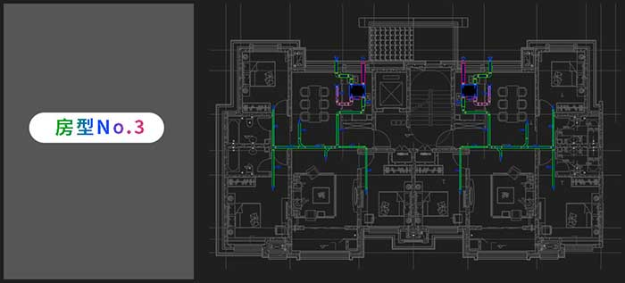
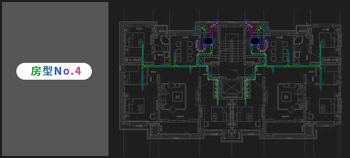

室内新风管道半自动布局图（模块化图纸设计）
▼▼新风管道需根据户型图单独设计绘制。
新风系统最为重要的销售渠道是开放商新建楼盘的配套，每个楼盘每个户型都需要单独设计绘制好新风管道布局图才能在竞标中取得一定的优势。过往，公司售前部门有工程师专门绘制此类图纸。有一次，一个机缘巧合，需要我暂时绘制部分此类图纸。在纯手工绘制了几十份图纸后，发现其中的规则和规律是完全可以使用参数化辅助设计的方式到达一定程度的自动化绘图。因此陆陆续续用了一段时间基本实现了半自动绘制新风管道图的程序。相比之前手工绘图的效率高出十多倍，因此也大幅度提高了公司工程竞标的竞争力。
▼▼由绘图程序完成的新风管道布局图。




半自动绘图程序是如何实现又快又准的出图呢？
思路很简单，将图纸中的各类元素单独设计为模组，再进行参数化设计，将图纸元素与户型图的关键数据做好对应关系。最终只需要修改不同的参数再结合不同种类和不同数量的图纸元素，就可以快速实现一分管道布局图的绘制。
▼▼图纸元素被单独设计为一个一个的模组。
▼▼每一个模组展开均为一套可编辑可修改的参数化程序图。（此图以一个模组为例）
▼▼程序总图：包含模组、参数逻辑关系、图纸颜色标注、尺寸标注等所有参数信息
程序总图中，左侧为房型关键信息采集输入、图纸元素的参数修改。右侧上部分为新风机接室外风口的参数设计程序，右侧下部分为新风机接室内风管的参数设计程序。完全自己便携的图纸程序，可以不断优化不断补充新要素，逐渐形成为一套完整且完善的强大绘图程序。
▼▼动图演示设计概念
Industrial Design